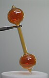

vapor
attribute

Source: Wikipedia
Wikipedia Page (Something wrong with this association? Let us know.)
Wikidata Page (Something wrong with this association? Let us know.)
Occurs in:
- atmosphere_air_water~vapor__specific_saturation
- atmosphere_bottom_air_water~vapor__partial_pressure
- air_water~vapor~dew-point__temperature
- air~saturated_water~vapor__partial_pressure
- air~dry_water~vapor__gas_constant_ratio
- atmosphere_air_column_water~vapor__leq_depth
- atmosphere_air_column_water~vapor__mass-per-area_density
- atmosphere_air_water~vapor~bubble-point__temperature
- atmosphere_air_water~vapor~dew-point__temperature
- atmosphere_air_water~vapor~equilibrium__partial_pressure
- atmosphere_air_water~vapor~frost-point__temperature
- atmosphere_air_water~vapor__mass-per-volume_density
- atmosphere_air_water~vapor__mixing_ratio
- atmosphere_air_water~vapor__partial_pressure
- atmosphere_air_water~vapor__psychrometric_constant
- atmosphere_air_water~vapor__relative_saturation
- atmosphere_air~saturated_water~vapor__partial_pressure
- atmosphere_air_water~vapor__virtual_potential_temperature
- atmosphere_air_water~vapor__virtual_temperature
- atmosphere_bottom_air_water~vapor_bulk__mass_aerodynamic_conductance
- atmosphere_bottom_air_water~vapor_bulk__mass_transfer_coefficient
- atmosphere_bottom_air_water~vapor~dew-point__temperature
- atmosphere_bottom_air_water~vapor~equilibrium__partial_pressure
- atmosphere_bottom_air_water~vapor~frost-point__temperature
- atmosphere_bottom_air_water~vapor__mass-per-volume_density
- atmosphere_bottom_air_water~vapor_bulk__neutral_mass_transfer_coefficient
- atmosphere_bottom_air_water~vapor__relative_saturation
- atmosphere_bottom_air~saturated_water~vapor__partial_pressure
- atmosphere_bottom_air_water~vapor_flowing__log-law_roughness_length
- atmosphere_air_water~vapor~dew-point__temperature
- atmosphere_air_water~vapor~frost-point__temperature
- atmosphere_air_water~vapor__partial_pressure
- atmosphere_air~saturated_water~vapor__partial_pressure
- sea_surface_air_water~vapor__partial_pressure
- sea_surface_air_water~vapor__relative_saturation
- water~vapor__mass-specific_gas_constant
- water~vapor_air~dry__relative_molecular_mass
- atmosphere_air_water~vapor__max_of_relative_saturation
- atmosphere_air_water~vapor__min_of_relative_saturation